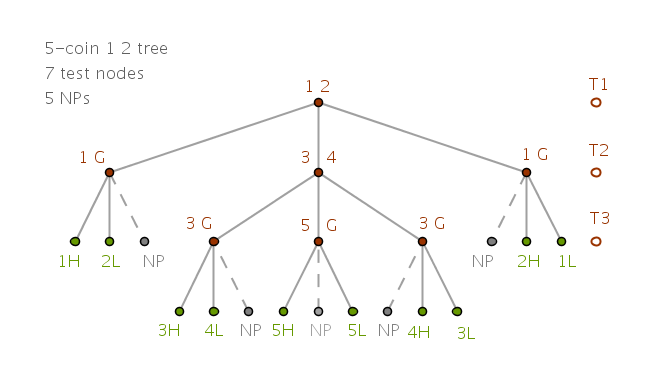

12 Coins
Money Grows on Trees
Problem
find one counterfeit coin and its relative weight among twelve given coins using three measurements on pan scales
Process
I have solved this problem using base ten and base three numbers and was aware of the correct answer. However, some time later I have recalled that AVL Tree nodes store, among other things, a balance factor which indicates whether the tree below is left heavy, right heavy or balanced. The similarity of balancing concepts is what gave me the impetus to start looking for a tree-based solution for this particular problem.
I have tried to capture the test results of coins' weighings in the AVL Tree node's balance factor as:
$$-1, 0, 1$$or:
$$LBR$$where \(L\) stands for left pan going down, \(B\) stands for balanced pans and \(R\) stands for right pan going down.
However, after not having much success with that idea I abandoned it reasoning that being binary in nature AVL Trees are not a suitable tool for solving this particular problem.
The next natural thought is to try ternary trees instead. Unlike a node of a binary tree that can have at most two descendants, left and right, a node of a ternary tree can have at most three descendants, left, middle and right.
Since the nature of such problems is optimization, I realized that to solve this problem using a ternary tree we will have to use all three descendants. To gain some insight into a possible solution let us start with a primitive \(3-\) coin problem and work our way up to \(12\) coins.
Notation
We number the coins prior to the first weighing with natural numbers, in base ten, as:
$$1, 2, 3, \dots$$The following was not my idea - it was given to me by someone else: instead of keeping the originally assigned numbers, renumber the coins after each weighing. However, I did not use this idea literally but decided to simply mark the good coins as \(G\), for Good, meaning not counterfeit.
In the upcoming drawings each intermediate node of a ternary tree represents one test or one weighing.
Each terminal node of a ternary tree represents one bad (counterfeit) coin - its number and quality: \(H\) is Heavy and \(L\) is Light. For example:
$$2H$$means that the counterfeit coin is the coin numbered as \(2\) and it is heavier then the good coins.
$$3L$$means that the counterfeit coin is the coin numbered as \(3\) and it is lighter then the good coins.
A terminal node marked as \(NP\) stands for "Not Possible" - given the initial conditions of this problem this weighing's outcome is not possible.
Tests or weighings are recorded as:
$$123 \quad 456$$meaning that the coins numbered \(1, 2, 3\) are on the left pan and the coins numbered \(4, 5, 6\) are on the right pan.
The straight lines between the tree nodes capture the deductions that are based on the algorithm described below:
$$H = 123$$for example, means that a Heavy coin is one of the coins numbered \(1, 2, 3\).
$$L = 456$$means that a Light coin is one of the coins numbered \(4, 5, 6\).
$$G = 789$$means that all the coins numbered \(7, 8, 9\) are Good.
I did not qualify the lines between the tree nodes as \(LBR\) as it is obvious which one is which: the left nodes represent the left-heavy pans, the right nodes represent the right-heavy pans, the nodes connected with the vertical straight lines represent the balanced pans.
The designations:
$$T_1, T_2, T_3$$represent the heights of a tree in computer science lingo. Here we will treat them as test numbers.
For consistency sake, given a choice, we will always keep good coins on the right side.
If certain coins are not present at the given node it means that they are kept on the table - off the pans.
Algorithm
Regardless of the number of coins in the current experiment and currently on the pans, the following algorithm is always applicable:
- distribute the coins between the pans
- if the pans stay balanced then no bad coin can possibly be on these pans and, consequently, each and every coin on the pans is good and a bad coin must be on the table
- if the pans do not balance then no bad coin can possibly be on the table and, consequently, each and every coin on the table is good and a bad coin must be on the pans
In either case, once the pool of good coins is established, we shall rename all the previously numbered coins in it as just \(G\) and use as many of them as needed to flush out the counterfeit coin in consequent weighings.
\(3-\)coin Tree
With a \(3-\)coin tree we do not really have much choice for coin groupings for the initial test. Since there are just two pans, we place one coin on each pan leaving the third coin on the table.
If the pans stay balanced then coins \(1\) and \(2\) are both good and either one of them can be used to determine the quality of the counterfeit coin numbered as \(3\), problem solved in two weighings.
If the pans shift with the left pan going down then the coin on the table, number \(3\), must be good and can be used to determine the quality of the counterfeit coin which is either coin number \(1\) or coin number \(2\).
We replace, say, the coin number \(2\) with a good coin and perform the second measurement. If the pans balance then the counterfeit coin is the one numbered as \(2\) and must be Light, problem solved in two weighings.
If the left pan goes down then the counterfeit coin is the one numbered as \(1\) and it must be Heavy, problem solved in two weighings.
The pans can not possibly stay balanced on this second weighing.
The remaining scenario when the right pan goes down after the first test is analyzed in the same way:
\(4-\)coin Tree
Here the number of potential initial coin groupings is starting to grow: we can group the coins for the initial test as:
$$1 \quad 2$$or as:
$$12 \quad 34$$Here is the "\(1 \quad 2\)" version:
We see that when both tests result in balanced pans then by default it means that the coin numbered as \(4\) must be bad but we can not determine its quality with certainty - we must perform the third weighing for that.
Next I constructed the "\(12 \,\, 34\)" initial test grouping \(4-\)coin tree:
This initial grouping led to a ternary tree with \(7\) test nodes and \(7\) \(NP\)s. It turned out to be a good thing that I have constructed this tree as at this point hunches started bubbling up. Not knowing what lies ahead I started thinking that as the number of coins grows we will have to eliminate the \(NP\) nodes and replace them with tests that derive the most useful outcomes.
\(5-\)coin Tree
I have grouped the coins for the initial weighing as:
$$1 \quad 2$$ $$12 \quad 34$$Here is the "\(1 \quad 2\)" initial test grouping \(5-\)coin tree.
With my pencil on paper I have kept the deductions on the straight lines to help me keep track of the state of the problem. As the number of coins grows, however, the size and the look of the digital images begins to become awkward. To avoid the clutter in the digital images I omitted the deductions but by now you should have no problems doing them yourself:
While constructing the above \(5-\)coin tree I noticed that when after the first test pans stay balanced then we have coins numbered \(3, 4, 5\) as suspects which amounts to solving a previously solved \(3-\)coin problem. To finish constructing this \(5-\)coin tree we can simply take the earlier \(3-\)coin tree in its entirety and place it in the middle.
The \(5-\)coin "\(12 \quad 34\)" initial test grouping tree, on the other hand, can reuse the portions of the \(4-\)coin "\(12 \quad 34\)" tree on far left and far right:
Next I looked at the above \(5-\)coin trees and noticed that this time after the first test at level \(T_2\) we have one good coin available to us: if the coins \(12\) and \(34\) do not balance then the coin \(5\) must be good. Can we take advantage of this? I decided to take baby steps again by constructing a \(2-\)coin tree with one known good reference coin \(G\).
I have experimented with two types of ternary trees. For the first type I started testing two suspect coins first and used one good coin later. That approach results in \(3\) test nodes and \(3\) NPs.
For the second tree type I rearranged the order of tests by weighing the suspect coin against the known good one right away which results in \(2\) test nodes and \(1\) NP:
From this we conclude that it pays to test the suspect against a good coin early on. What about a \(3-\)coin tree with one known good reference coin \(G\)? The result is the same:
At this point I went back and reconstructed the first \(5-\)coin tree:

For the second \(5-\)coin "\(12 \quad 34\)" tree if the pans do not balance after the initial test then we have four suspect coins and one known good coin - on far left and far right of the tree.
I kept taking baby steps and imported the \(2-\) and \(3-\)coin trees with one known good reference coin to the \(4-\)coin portion of the tree.
If coins \(12\) and \(34\) balance after the first test then we group the coins for the second test as:
$$13 \quad 2G$$which generates \(2\) test nodes and \(1\) \(NP\).
The reason this testing scheme works so well is because at this point we know the quality of the suspect coins with certainty. Looking at the second test on the left, for example, we know that the coin \(1\) or \(2\) must be heavy or the coin \(3\) or \(4\) must be light:
\(6-\)coin Tree
If coins \(12\) and \(34\) balance after the first test then the coins \(5\) and \(6\) are the suspects and we already know how to deal with them:
At this point an association with Niels Bohr came to my mind. Mr. Bohr received a Nobel Prize for his atomic structure and quantum theory work in which, among other things, he deduced a formula that governs how electrons discretely fill out the energy levels orbiting the nucleus of an atom. I thought that a similar situation takes place with the coins - as their number grows the tests have to grab the vacant (\(NP\)) nodes to satisfy the requirement of testing the most coins in the least amount of steps.
\(7\)-coin Tree
If coins \(12\) and \(34\) balance after the first test then coins \(5, 6, 7\) are the suspects and we also know how to deal with them:
\(8-\)coin Tree
If we group the coins for the first test as:
$$123 \quad 456$$and they stay balanced then we have two suspect and six good coins but we only need one. The middle tree then becomes a \(2-\)coin "\(1 \quad G\)" tree which was constructed earlier.
If the coins "\(123 \quad 456\)" do not balance then we have six suspect and two good coins and in just two tests we need to find the number of a bad coin and its relative weight. Here the coin distribution pattern changes somewhat.
In my earlier \(2-\) and \(3\)-coin tree experiments when a known good reference coin is available we could say that we used all the good coins or as many good coins as needed. In this case, when the pans do not stay balanced after the first test, we have two good coins and that is how many we will use for the second test:
$$124 \quad 3GG$$where we also switch one potentially heavy coin, number \(3\), with one potentially light coin, number \(4\):
If the pans balance after the first test then we have three suspect coins, otherwise we have six suspect and three good coins and we can reuse the tests from the \(8-\)coin tree:
\(10-\)coin Tree
If the pans balance after the first test then we have four suspect and six good coins. Since the qualities of the suspect coins are unknown, to maximize the number of coins whose relative weight can be determined with certainty we keep one coin, number \(10\), on the table and we test coins \(789\) against the three good ones:
$$789 \quad GGG$$which generates four test nodes and only one \(NP\):
\(11-\)coin Tree
If the pans balance after the first test then we have eight good and only three suspect coins and we know how to deal with those.
However, if the pans do not balance after the first test then we have three good reference and eight suspect coins whose weight qualities are already known. To group these coins for the second test we follow the same pattern that we have been using so far.
Assume that, say, the left pan went down after the first test. Then:
$$H = 1234$$ $$L = 5678$$We take the first three potentially heavy coins \(123\), add one potentially light coin to them, \(5\), and we test this set against one potentially heavy coin, \(4\), and the three good reference coins which is all the reference coins that we have available to us at that point. The test then becomes:
$$1235 \quad 4GGG$$
\(12-\)coin Tree
If the pans do not balance after the first test then the far right and far left trees are identical to the \(11\)-coin tree.
The only portion of the tree that is different is the middle since it has to test four suspect coins instead of three. But we already figured out how to perform this test while constructing the \(10\)-coin tree:
Conclusions
- the maximum number of coins \(n\) that can be tested for one bad coin in \(t\) tests is the sum total of all the nodes of a ternary tree of height \(t - 1\):
$$n(t) = \sum_{k=0}^{t - 1} 3^k$$We can calculate that sum purely algebraically by applying the Rearrangement Basic Approach to its terms. Say \(t = 4\):
$$n(4) = 1 + 3 + 9 + 27$$Starting from the second term in the above sum factor out \(3\) for all the remaining terms:
$$n(4) = 1 + 3 \times 1 + 3 \times 3 + 3 \times 9$$ $$n(4) = 1 + 3 (1 + 3 + 9)$$Observe that the sum in parenthesis is one term short of the original sum:
$$n(4) = (1 + 3 + 9) + 27$$ $$n(4) = (1 + 3 + 9) + 3^3$$ $$(1 + 3 + 9) = n(4) - 3^3$$Put that back into original equation:
$$n(4) = 1 + 3 (n(4) - 3^3)$$And solve for \(n(4)\):
$$n(4) = 1 + 3 \times n(4) - 3 \times 3^3$$ $$2n(4) = 3 \times 3^3 - 1$$ $$2n(4) = 3^4 - 1$$ $$n(4) = \frac {3^4 - 1}{2}$$So for any \(t\):
$$\bbox[#e8e8e8,3pt]{n(t) = \sum_{k=0}^{t - 1} 3^k = \frac {3^t - 1}{2}}$$
- the maximum number of coins \(w\) whose weight quality can also be
determined with certainty in \(t\) tests is one short of \(n\):
- if we also designate the straight lines in the ternary tree with \(LRB\)
test outcomes then by following such a path we will arrive at a bad coin. We
interpret this fact as follows.
\(B\) in the path of a counterfeit coin of any quality, heavy or light, means that that coin was on the table - off the pans.
For a heavy coin \(L\) means that it was on the left pan and \(R\) means that it was on the right pan.
For a light coin \(L\) means that it was on the right pan and \(R\) means that it was on the left pan.
- for all the trees that we have constructed so far the very last test
is always a two-coin test as there is only one coin on each pan
- recall that we have grouped the coins for the second test of the
\(4\)-coin tree as:
If we rename the potentially heavy coins as \(H\) and the potentially light coins as \(L\) then the same test becomes:
$$HL \quad HL$$and it generates three test nodes - the original node itself and two nodes below since the \(NP\) is useless.
If we do the same for the \(5\)-coin tree then the test:
$$13 \quad 2G$$is recorded as:
$$HL \quad HG$$
since we have one good coin available. That test generates only two test nodes and the above pattern works for all the trees that follow.
For the \(8\)-coin tree it is:
$$124 \quad 3GG$$ $$HHL \quad HGG$$For the \(11\)-coin tree it is:
$$1235 \quad 4GGG$$ $$HHHL \quad HGGG$$We observe that the number of heavy coins on the left pan matches the number of good coins on the right pan. It follows then that for more than \(12\) coins one of the tests will eventually be:
$$HHHHL \quad HGGGG$$and we can look at this pattern as follows:
if we collapse multiple heavy coins on the left pan into just one heavy coin \(H\) and all the good coins on the right pan into just one good coin \(G\) then the coin distribution pattern again becomes:
$$HL \quad HG$$\(\blacksquare\)